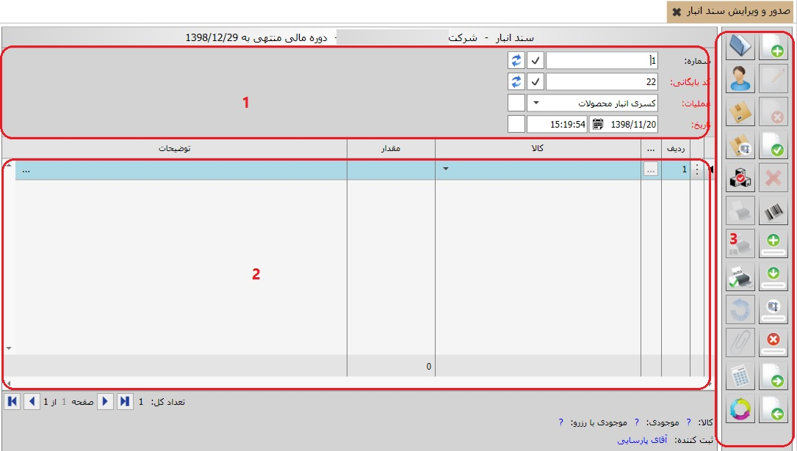

برای صدور اسناد انبار از بخش «عملیات روزانه و بایگانی اسناد» منوی «صدور و ویرایش سند انبار» را انتخاب کنید، پنجره زیر ظاهر می شود:
فرم صدور سند انبار به سه قسمت تقسیم شده است. قسمت بالای فرم صدور سند انبار (قسمت شماره 1) شامل مشخصات خود سند از قبیل شماره، کد بایگانی، تاریخ و ساعت ثبت سند و مشخصات عملیات از جمله انبار، شعبه، پروژه و ... می باشد. قسمت پایین فرم (قسمت شماره 2) شامل اطلاعات ردیف های سند می باشد. نوار عمودی سمت راست (قسمت شماره 3) نیز ابزار های لازم را شامل می شود که بسته به موقعیت سند تعدادی از ابزار ها فعال و تعدادی غیر فعال می شوند.
در ادامه به شرح کامل هر یک از سه قسمت فرم به صورت جداگانه می پردازیم:
1 : کادر شماره 1

اسناد صادر شده از سیستم انبار بر حسب عملیات و به ترتیب صدور شماره بندی می شوند. این شماره الزامی نیست به عبارتی سند انبار صادر شده می تواند فاقد شماره باشد، همچنین این شماره می تواند تکراری باشد یعنی دو سند انبار می توانند دارای یک شماره باشند، البته این شماره قابلیت مرتب شدن دارد.
هر سند انباری که صادر می شود باید دارای تاریخ و ساعت باشد که به صورت پیش فرض مطابق با تاریخ و ساعت سیستم می باشد ولی قابلیت ویرایش دارد و شما می توانید هر دو را ویرایش کنید.
کلیه اسنادی که از سیستم انبار صادر می شوند به ترتیب صدور کد بندی می شوند. این کد الزامی می باشد و هر سند انبار باید دارای یک کد بایگانی باشد، همچنین این کد قابلیت تکراری بودن و مرتب شدن را ندارد.
با کلیک بر فیلد عملیات لیست عملیات های موجود ظاهر می شود، با انتخاب عملیات مورد نظر مشخصه های عملیات طی فیلدهای شخص، انبار، شعبه، مرکز هزینه و پروژه باید تعیین شوند.
در نهایت اگر نیاز به کد دیگری داشید می توانید آن را داخل فیلد کد فرعی یادداشت کنید. همچنین می توانید توضیحات لازم را در فیلد توضیحات تایپ کنید.
2 : کادر شماره 2

در قسمت شماره 2(شکل بالا) شما ردیف های سند انبار را دارید. در هر ردیف شما ابتدا باید نام کالا را از لیست باز شده انتخاب کنید. فیلد واحد پس از انتخاب نام کالا به صورت اتوماتیک بر طبق تعریف کالا پر می شود. در فیلد مقدار، مقدار کالای انتخاب شده را وارد کنید و در صورتی که برای عملیات در حال صدور پارامتر (هایی) در سطح ردیف تعریف کرده باشید، مقادیر مربوط به آن ها را نیز وارد نمایید. در فیلد توضیحات نیز توضیح مربوط به هر ردیف را می توانید وارد کنید.
 در صورتی که برای عملیات مورد نظر در فرم صدور سند، انبار تعریف کرده باشید، در لیست کالاها برای هر ردیف لیست کالاهای انباری که عملیات مورد نظر به آن اختصاص دارد نمایش داده می شود. اما اگر عملیات انتخاب شده در فرم صدور سند انبار نداشته باشد، در لیست کالا برای هر ردیف، تنها نام کالاهایی نمایش داده می شود که به عملیات مورد نظر تخصیص یافته باشد.
در صورتی که برای عملیات مورد نظر در فرم صدور سند، انبار تعریف کرده باشید، در لیست کالاها برای هر ردیف لیست کالاهای انباری که عملیات مورد نظر به آن اختصاص دارد نمایش داده می شود. اما اگر عملیات انتخاب شده در فرم صدور سند انبار نداشته باشد، در لیست کالا برای هر ردیف، تنها نام کالاهایی نمایش داده می شود که به عملیات مورد نظر تخصیص یافته باشد.
3 : کادر شماره 3، نوار عمودی سمت راست فرم صدور سند انبار شامل یک سری ابزارهای هست که به شرح آنها می پردازیم:
 ایجاد سند جدید (F8):
برای ایجاد سند انبار جدید می توانید از این آیکن استفاده کنید.
ایجاد سند جدید (F8):
برای ایجاد سند انبار جدید می توانید از این آیکن استفاده کنید.
 ویرایش این سند (F2):
این آیکن هنگامی که سند در حالت ثبت شده قرار دارد فعال می باشد و با کلیک روی آن سند از وضعیت ثبت شده خارج می شود و می توان آن را ویرایش کرد.
ویرایش این سند (F2):
این آیکن هنگامی که سند در حالت ثبت شده قرار دارد فعال می باشد و با کلیک روی آن سند از وضعیت ثبت شده خارج می شود و می توان آن را ویرایش کرد.
 حذف این سند (F9):
این آیکن برای حذف سند انبار ثبت شده بکار میرود.
حذف این سند (F9):
این آیکن برای حذف سند انبار ثبت شده بکار میرود.
 ثبت سند (Ctrl+Enter):
پس از اتمام ثبت اطلاعات سند انبار یا اتمام ویرایش آن با کلیک بر روی این آیکن سند به حالت ثبت شده در می آید.
ثبت سند (Ctrl+Enter):
پس از اتمام ثبت اطلاعات سند انبار یا اتمام ویرایش آن با کلیک بر روی این آیکن سند به حالت ثبت شده در می آید.
 انصراف از ویرایش (Ctrl+F2):
اگر در حین ویرایش یک سند از ویرایش منصرف شدید می توانید از این آیکن استفاده کنید.
انصراف از ویرایش (Ctrl+F2):
اگر در حین ویرایش یک سند از ویرایش منصرف شدید می توانید از این آیکن استفاده کنید.
 ایجاد ردیف (Ctrl+Plus):
برای ایجاد یک ردیف در سند انبار در حال ثبت یا ویرایش بکار می رود.
ایجاد ردیف (Ctrl+Plus):
برای ایجاد یک ردیف در سند انبار در حال ثبت یا ویرایش بکار می رود.
 کپی ردیف (Ctrl+Shift+Plus):
چنانچه تمایل داشتید یک ردیف سند انبار را عینا در ردیف بعدی کپی کنید از این گزینه استفاده کنید
کپی ردیف (Ctrl+Shift+Plus):
چنانچه تمایل داشتید یک ردیف سند انبار را عینا در ردیف بعدی کپی کنید از این گزینه استفاده کنید
 حذف ردیف (Ctrl+Minus):
پیش از ثبت سند یا هنگام ویرایش آن اگر تمایل داشتید یک ردیف حذف شود، ردیف را انتخاب کنید و روی این آیکن کلیک کنید.
حذف ردیف (Ctrl+Minus):
پیش از ثبت سند یا هنگام ویرایش آن اگر تمایل داشتید یک ردیف حذف شود، ردیف را انتخاب کنید و روی این آیکن کلیک کنید.
 مشاهده سند بعدی (F12):
با این آیکن شما قادر هستید اگر بعد از سند جاری سند دیگری باشد یک سند بعد را مشاهده کنید.
مشاهده سند بعدی (F12):
با این آیکن شما قادر هستید اگر بعد از سند جاری سند دیگری باشد یک سند بعد را مشاهده کنید.
 مشاهده سند قبلی (F11):
با کلیک بر روی این آیکن شما یک سند قبل از سند جاری را مشاهده می کنید.
مشاهده سند قبلی (F11):
با کلیک بر روی این آیکن شما یک سند قبل از سند جاری را مشاهده می کنید.
 باز کردن (F3):
با این آیکن شما می توانید لیست کل اسناد صادر شده از انبار را در پنجره ای که ظاهر می شود مشاهده کنید.
باز کردن (F3):
با این آیکن شما می توانید لیست کل اسناد صادر شده از انبار را در پنجره ای که ظاهر می شود مشاهده کنید.
 چاپ این سند (Ctrl+P):
شما با این آیکن قادر خواهید بود از یک سند ثبت شده گزارش بگیرید، چنانچه روی این آیکن کلیک کنید پنجره ای نمایان می شود و شما می توانید گزارش مورد نظر خود را از گزارش های موجود انتخاب کرده و یا حتی گزارش دلخواه خود را طراحی کنید و سپس پرینت بگیرید.
چاپ این سند (Ctrl+P):
شما با این آیکن قادر خواهید بود از یک سند ثبت شده گزارش بگیرید، چنانچه روی این آیکن کلیک کنید پنجره ای نمایان می شود و شما می توانید گزارش مورد نظر خود را از گزارش های موجود انتخاب کرده و یا حتی گزارش دلخواه خود را طراحی کنید و سپس پرینت بگیرید.
 چاپ تکرار شونده (Ctrl + T):
شما با این آیکن قادر خواهید بود به تعداد مقدار یک سند ثبت شده گزارش بگیرید، چنانچه روی این آیکن کلیک کنید پنجره ای نمایان می شود و شما می توانید انتخاب کنید به تعداد موجود در ستون مقدار از سند پرینت گرفته شود و یا از یک مقدار مشخص به تکرار پرینت گرفته شود. با کلیک بر روی این گزینه منوی زیر باز می شود :
چاپ تکرار شونده (Ctrl + T):
شما با این آیکن قادر خواهید بود به تعداد مقدار یک سند ثبت شده گزارش بگیرید، چنانچه روی این آیکن کلیک کنید پنجره ای نمایان می شود و شما می توانید انتخاب کنید به تعداد موجود در ستون مقدار از سند پرینت گرفته شود و یا از یک مقدار مشخص به تکرار پرینت گرفته شود. با کلیک بر روی این گزینه منوی زیر باز می شود :

مشاهده کاردکس کالا (F6): توسط این گزینه می توانید کاردکس کالای انتخاب شده در هر ردیف را مشاهده نمایید.
 مشاهده مبنا:
این گزینه پس از ثبت سند فعال می گردد که با زدن آن صفحه زیر باز خواهد شد.
مشاهده مبنا:
این گزینه پس از ثبت سند فعال می گردد که با زدن آن صفحه زیر باز خواهد شد.

در این پنجره گزینه هایی قرار دارد که با انتخاب هر یک ردیف های مختلفی از اسناد را مشاهده خواهید کرد:
ردیف های مبنای این سند: این گزینه ردیف های سندی را نشان می دهد که سند جاری بر مبنای آن صادر شده است.
ردیف های بر مبنای این سند: ردیف های اسنادی را نمایش می دهد که بر مبنای سند جاری صادر شده است.
ردیف های این سند: این گزینه ردیف های سند جاری را نمایش می دهد.
ردیف های پایه این سند: اگر زنجیره ای از عملیات داشته باشید که هر یک بر مبنای دیگری صادر می شود، با انتخاب این گزینه می توانید ردیف های سند پایه که اولین سند مبنا می باشد را مشاهده نمایید.
در واقع صفحه مشاهده مبنا صفحه ای است که به کمک آن می توانید درباره مبنا های یک عملیات اطلاعات کافی کسب کنید.
 محاسبه مقدار (F7):
در صورتی که برای کالای انتخاب شده واحد فرعی تعریف کرده باشید، با انتخاب نام آن کالا و زدن گزینه محاسبه مقدار، پنجره ای باز می شود که می توانید انتخاب کنید مقدار کالا را بر اساس واحد فرعی وارد می کنید یا واحد اصلی. در آن صورت طبق نسبت موجود بین واحد اصلی و فرعی، مقدار کالا به واحد اصلی در فرم صدور سند نمایش داده می شود. در واقع این گزینه به شما این امکان را می دهد که برای راحتی کار شما مقدار را به واحد فرعی وارد کنید و بتوانید با واحد اصلی ثبت کنید.
محاسبه مقدار (F7):
در صورتی که برای کالای انتخاب شده واحد فرعی تعریف کرده باشید، با انتخاب نام آن کالا و زدن گزینه محاسبه مقدار، پنجره ای باز می شود که می توانید انتخاب کنید مقدار کالا را بر اساس واحد فرعی وارد می کنید یا واحد اصلی. در آن صورت طبق نسبت موجود بین واحد اصلی و فرعی، مقدار کالا به واحد اصلی در فرم صدور سند نمایش داده می شود. در واقع این گزینه به شما این امکان را می دهد که برای راحتی کار شما مقدار را به واحد فرعی وارد کنید و بتوانید با واحد اصلی ثبت کنید.

در شکل بالا مشاهده می کنید که برای کالای انتخاب شده واحد اصلی و فرعی و نسبت بین آن ها نمایش داده شده است و شما می توانید مقدار کالا را یا با واحد اصلی و یا با واحد فرعی وارد کنید که نهایتا با واحد اصلی به شما نمایش داده می شود. با زدن گزینه
 نیز می توانید نسبت میان واحد اصلی و فرعی را معکوس کنید که در آن صورت جای فیلد مقدار برای واحد اصلی و فرعی نیز تغییر می کند.
نیز می توانید نسبت میان واحد اصلی و فرعی را معکوس کنید که در آن صورت جای فیلد مقدار برای واحد اصلی و فرعی نیز تغییر می کند.
 بررسی نگارش (F5):
قبل از ثبت سند می توانید با این آیکن از اینکه تمام فیلد های لازم را پر کردید اطمینان حاصل کنید.
بررسی نگارش (F5):
قبل از ثبت سند می توانید با این آیکن از اینکه تمام فیلد های لازم را پر کردید اطمینان حاصل کنید.
 محاسبه مقادیر (F5):
این گزینه مقادیر ردیف های موجود در سند را محاسبه می کند.
محاسبه مقادیر (F5):
این گزینه مقادیر ردیف های موجود در سند را محاسبه می کند.
 انتخاب دوره مالی (F10):
با کلیک بر روی این آیکن پنجره ای ظاهر می شود که لیست دوره های مالی تعریف شده در سیستم را نمایش می دهد و شما می توانید دوره مالی مورد نظر خود را انتخاب کنید.
انتخاب دوره مالی (F10):
با کلیک بر روی این آیکن پنجره ای ظاهر می شود که لیست دوره های مالی تعریف شده در سیستم را نمایش می دهد و شما می توانید دوره مالی مورد نظر خود را انتخاب کنید.